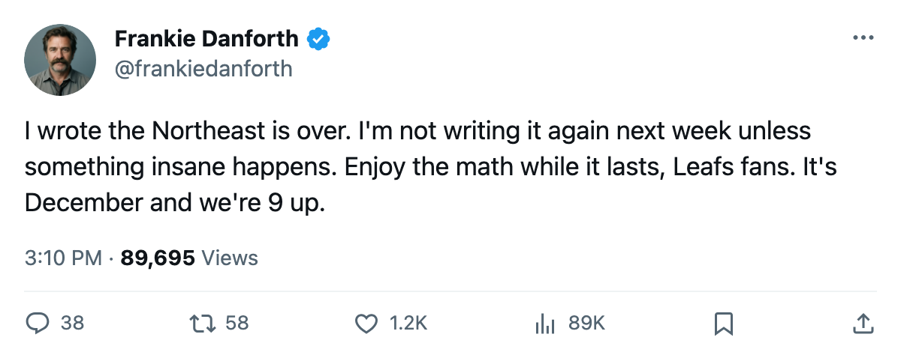

Northeast Race: 9 points, 2 games in hand, and the gap that stopped being a gap
Toronto sits at 51 points in 33 games. Boston has 42 in 31. The division crown is no longer a race.
 Sam OkaforLeafs beat reporter · Queen City Telegram
Sam OkaforLeafs beat reporter · Queen City Telegram
The Northeast Division standings on 2005-12-20 read:  Toronto Maple Leafs 51 points in 33 games,
Toronto Maple Leafs 51 points in 33 games,  Boston Bruins 42 in 31,
Boston Bruins 42 in 31,  Montreal Canadiens 35 in 32,
Montreal Canadiens 35 in 32,  Buffalo Sabres 30 in 30,
Buffalo Sabres 30 in 30,  Ottawa Senators 27 in 30. The gap between first and second is 9 points, and Toronto has played 2 more games than Boston. Every game in hand for Boston is worth at most 2 points, and even winning both of theirs would leave them 5 back.
Ottawa Senators 27 in 30. The gap between first and second is 9 points, and Toronto has played 2 more games than Boston. Every game in hand for Boston is worth at most 2 points, and even winning both of theirs would leave them 5 back.
On 2005-11-30, this desk wrote that Toronto led the division at 36 points in 23 games and called it a sentence we did not expect to type. Nineteen days later the lead is wider, because Toronto went 7-1-0 in that stretch while Boston managed 4-4-0.
Toronto has scored 113 goals against 73 allowed, a 40-goal differential in 33 games. Boston sits at 17 in 31. The gap in goal difference alone is 23 goals.
What each rival has left
| Club | GP | Points | Remaining vs TOR | Next vs TOR |
|---|---|---|---|---|
| BOS | 31 | 42 | 5 | Not in the next 5 |
| MTL | 32 | 35 | 4 | Not in the next 5 |
| BUF | 30 | 30 | 4 | Not in the next 5 |
| OTT | 30 | 27 | 3 | Not in the next 5 |
Toronto holds a 0-2-0 record against Boston this season, the only division opponent with a winning record against them. Boston has beaten Toronto twice in regulation. Those 2 losses account for 4 points Toronto did not collect in the division. Even so, the overall point total is 9 ahead.
The home-and-home against Boston is not in the next five games, and no division meeting appears on the schedule through 2005-12-31. Toronto's remaining division games arrive in January, when Boston will have too few games left to close the gap.
The road record nobody forecast
Toronto is 11-2 on the road, which is what is driving this lead. Boston is 12-3 on the road, better than Toronto, and the only club in this division that could theoretically close a point gap through road hockey alone. They would need a 9-game winning streak while Toronto wins nothing.
